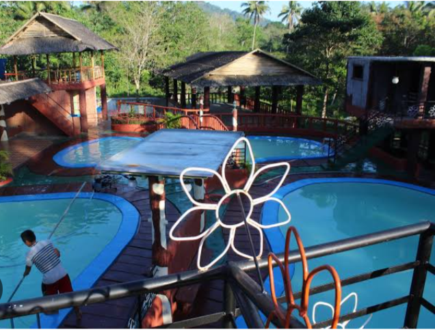

Tambunan Beach Resort is a hidden paradise located in Tabina, Zamboanga del Sur. It is known for its clear blue waters, fine white sand, and peaceful atmosphere, making it an ideal place to relax and unwind. Unlike crowded beaches, Tambunan offers a calm environment where visitors can enjoy swimming, snorkeling, or simply strolling along the shore. The resort is also surrounded by lush greenery and stunning views, perfect for family outings, barkada trips, or solo getaways. With its natural beauty and serene setting, Tambunan Beach Resort is truly a gem worth visiting in Mindanao.
Boulevard
Pagadian Boulevard is one of the most popular landmarks in Pagadian City, Zamboanga del Sur. It stretches along the coastline, giving visitors a refreshing view of Illana Bay and its beautiful sunset. The boulevard is designed with wide walkways, lamp posts, benches, and spaces for jogging or strolling, making it a favorite spot for both locals and tourists.
During the evening, it becomes more lively with food stalls offering different street foods and local delicacies, while the cool sea breeze adds to its relaxing atmosphere. Pagadian Boulevard is not just a place to walk—it is a space where people gather to enjoy the beauty of nature, food, and community life.
Spring land resort
Spring Land Resort is a refreshing getaway nestled in a peaceful natural setting. Known for its cool spring waters and family-friendly atmosphere, the resort offers a perfect spot for relaxation and recreation. Visitors can enjoy swimming in the clean pools, which are constantly supplied with fresh spring water, making the experience both soothing and revitalizing.
The resort features cottages and shaded areas ideal for picnics, gatherings, and special occasions. Surrounded by greenery, Spring Land provides a calm environment away from the noise of the city, giving guests a chance to unwind and enjoy the beauty of nature. It is also a popular destination for outings, celebrations, and bonding moments with family and friends.
Dumalinao Resort

Dumlaniao Resort is one of the well-known beach destinations in Zamboanga del Sur, located in Barangay Dumalinao. The resort is famous for its long stretch of fine sand, clear blue waters, and peaceful surroundings. It offers a refreshing escape from the busy life in the city, perfect for family outings, group gatherings, or just relaxing by the shore.
Visitors can enjoy swimming, picnics, and beach games, while cottages and open spaces are available for rent. With its natural beauty and calm environment, Dumlaniao Resort is an ideal spot to unwind, bond with loved ones, and experience the charm of the local seaside.